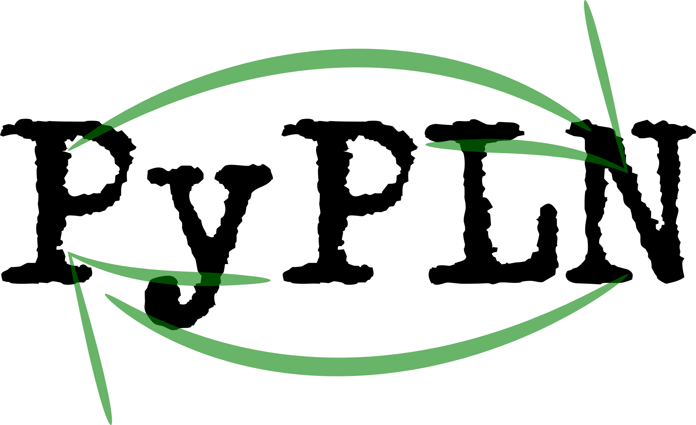

PyPLN - A Framework for Distributed Natural Language Processing
PyPLN is a complete framework to create analysis based on
corpora. By integrating many text mining and natural language processing
tools, it offers an easy-to-use Web interface where you can manage
documents, corpora and interact with its analysis/visualizations. PyPLN
is free software (as in free speech) and can scale very well depending on
your demand.
Links
Authors
-
Álvaro Justen aka Turicas:
-
Flávio Codeço Coelho:
-
Renato Rocha Souza:
Sponsored By